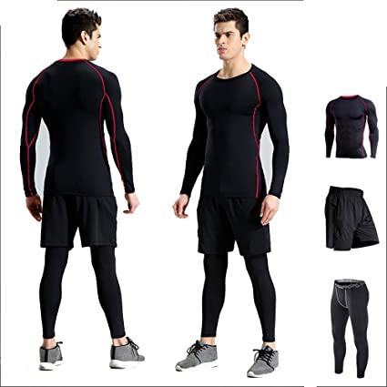
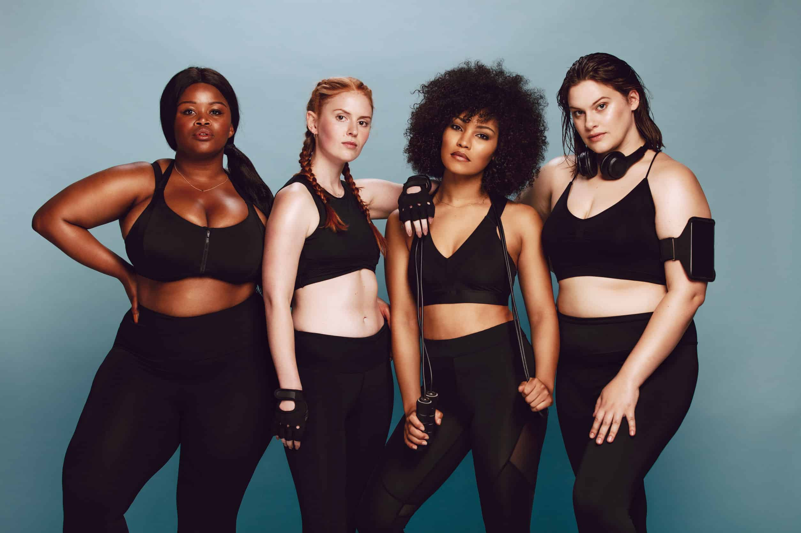
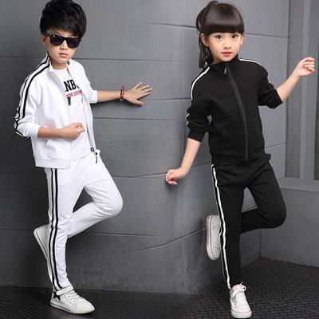

La moda deportiva sigue hoy en día dos vías muy diferenciadas. Por un lado, las grandes marcas crean los artículos más avanzados tecnológicamente para ofrecer un rendimiento deportivo cada vez mejor, que ayudan a superar marcas y objetivos.
 Volver al inicio "Menu"La moda deportiva sigue hoy en día dos vías muy diferenciadas. Por un lado, las grandes marcas crean los artículos más avanzados tecnológicamente para ofrecer un rendimiento deportivo cada vez mejor, que ayudan a superar marcas y objetivos.
 Volver al inicio "Menu"La moda deportiva sigue hoy en día dos vías muy diferenciadas. Por un lado, las grandes marcas crean los artículos más avanzados tecnológicamente para ofrecer un rendimiento deportivo cada vez mejor, que ayudan a superar marcas y objetivos.
 Volver al inicio "Menu"